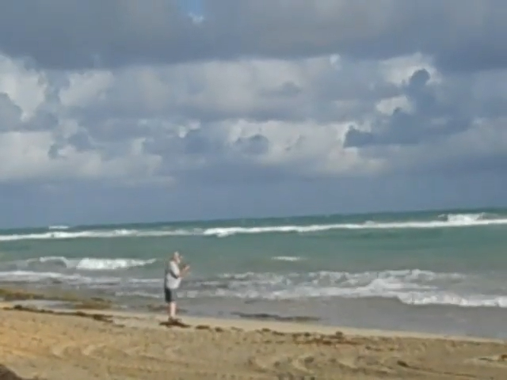
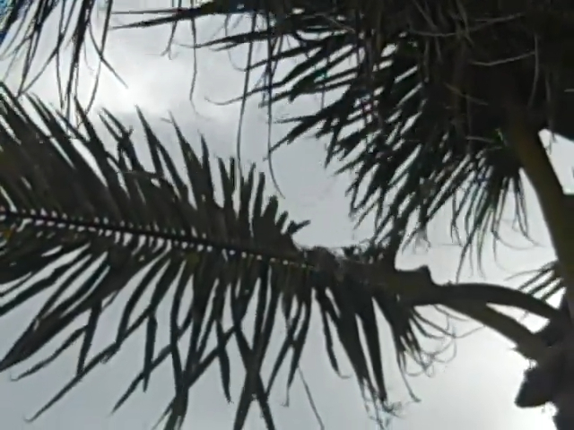
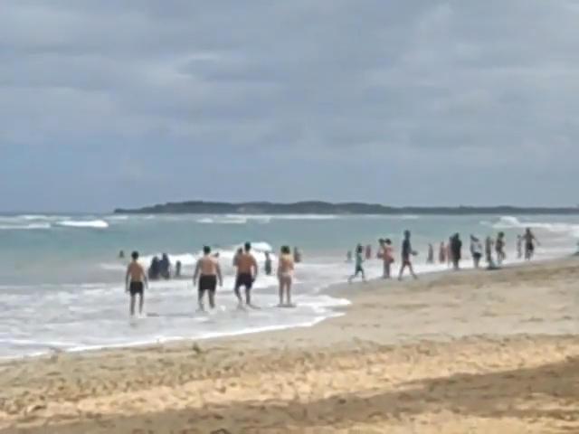

An Entrance Exam
Jan 07 2026

I have so many pockets left unsealed now i have no idea where to begin. I am beginning to leave household objects in my dreams, this morning i awoke to find a debit switched for an august leaf. I am often drowning three times into growling sands, working knots into doughs and watering my bread before complacency. I want to find a map.
I want to scream. I want to tear away flywater rainsealed backdrops and bring dreams forth, i want to hear you taste gold and love it. I want stasis and i want truth. I want portalbearing cellhating friends to swing down from coffeeshops and tell me what’s causing all these fires on the news, to tell me who switched the love out for soap. I want three quarters an hour for an executive functioning division bringing witchcraft by the century and eliminating eyerolling banning yoga delivering books and driving home lead figurines. I want orangutan readers and i want yarn on the wall, hanging fifty threadwork patches high. I want a scroll by the foot and i want glory. I want stone bells ringing down hedonistic roadways and clubhouses and passages, i want to wink when the airplane lands, i want an entrance exam. I want guilt and i want extreme mistrust. I want you to bow for me, bow for your mother and drop your glasses down the chute before the dog leaves the station. I want to unzip the Pacific and drop medication inside, i want to let dimes roll out my hands like water, i want candies to flow off my kneecaps on borrowed time. I want a thick glassy mediatory lamp shining over radio towers, and i want to vacuum-seal Boston next December.
I want drivers and tricycles and toothbrushes and umbilical bathmats and origami cellphones. I want to not know what i want, i want to leave the forests wide and true and let seasons pass in minutes (as they do) and let charcoal know the rain and let numbers fly like dogs. I want to know nothing except very good days and very bad days, i want to scrape every blinking definition off the wall and blind the children. I want to take things seriously and turn my placenta into a smoothie or drink seawater until i grow fins. I want a callused life. I want to not know a number beyond fifty and i want to know the eastern seaboard, know hemp and thatch and vomit and swiss chard on Sundays. I want to hunt yearly and sew mountain to mountain and bliss and bobsleds.
I want to not think about what i want and think about what i have i want to drive my grandmother’s car and freeze my toes one by one. I want to worry less about tomberoding microchasms and more about tuna, salmon, heirlooms, drainage, damage. I want more tea and rain and heartbreak and keeping the real good stuff tight and the wet bothered kelp loose by the hips. I want armbands and wristwatches and feathers. I want lamplight. I want water by the bed and dreams in the corner. I want to consult the rabbi. I want correspondence. I want art on a list. I want hearts in the open. I want it all. I want it now.
 